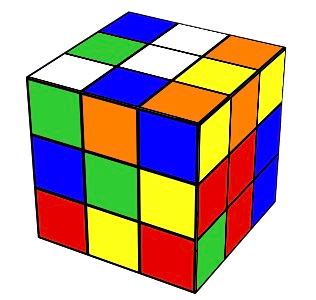

3. Heuristic Search#
3.1. Rubik’s cube#
Motivation. Heuristic search was born to address combinatorial problems in terms of state-space expansion. This is clearly exemplified by the well known Rubik’s cube, with \(3\times 3\) colored stickers per face. Then, given the solved cube (left), someone scrambles it (right) by applying a sequence of rotations. We have six types of \(90^{\circ}\) clockwise rotations or states following the standard notation:
Clockwise |
Rotational Description |
|---|---|
U |
Upper-horizontal block (top-to-left) |
D |
Down-horizontal block (front-to-right) |
R |
Right-vertical block (front-to-top) |
L |
Left-vertical block (front-to-down) |
F |
Front-face block (front-to-right) |
B |
Back-face block (back-to-left) |
Solved Cube |
Scrambled Cube |
|---|---|
|
 |

Permutations. Note that we have 3 types of move: horizontal, vertical and face (side) twist. In addition, if we rotate the upper block to the left, the opposite is to make the same rotation but counter-clockwise. Thus, we have six more rotations: U’, D’, R’, L’, F’ and B’. Thus, strictly speaking, we have \(12\) possible rotations to choose from any configuration. In the state-space language, each state may span \(n=12\) states.
Mathematically each configuration can be considered as a sequence of \(6\times 3\times 3 = 54\) elements containing numbers from \(1\) to \(6\). How many permutations (with repetition) do we have? Well, for \(n=6\) and \(r=54\) we have \(n^r\approx 10^{42}\). However, the symmetries of the problem lead to the following reasoning:
Corners. There are \(8\) corners in the cube. Then, we have \(n_{corners}=8!\) corner arrangements.
Corners Orientations. Each corner arrangement may have \(3\) possible orientations (there are \(3\) colors that can face up). Then, we have \(n_{CO}=3^{8}\) possibilities per corner permutation.
Edges. There are \((9-4=5-1=4)\times 3\) non-corner and non-center pieces, called edges. These edges can be arranged in \(n_{edges}=12!\) ways.
Edges Orientations. Since each edge may have \(2\) orientations (colors), we have \(n_{EO}=2^{12}\).
The product rule of combinatorics leads to:
Analyzing a bit more the cube, we have that:
Only \(1/3\) of the permutations have the correct orientations.
Only \(1/2\) of the permutations have the same edge orientations.
Only \(1/2\) of the latter permutations have the correct “parity” (a concept of group theory)
Then, we have
God’s number N. Given a scrambled cube, What is the minimum number of steps to get back to the initial state? Well, remember that we can perform \(n=12\) moves each time. However, given the first \(12\), next time we can only do \(11\) (the other one undoes the first move). Then:
Actually, in 2013 Rokicki et al. proved that the “diameter of the Rubik’s Cube is \(\mathbf{N}=20\)”, i.e. it can be solved in \(20\) moves or less.
The sequence found for the above case is:
R’ D L’ F R F’ D’ R’ D’ F’ U L’ U R R U R’ F D R’ D’ F D’ L F R F’ D F R’ F’ L’ R
and it has \(33\) moves. How is it done? Answering this question leads to study the rudiments of heuristic search and a particular approach (called Iterative Deepening Search) for the Rubik’s Cube (RC in the following).
3.2. Heuristic Search#
3.2.1. Search Tree#
Classical textbooks such as Pearl’s one ”Heuristics: Intelligent Search Strategies for Problem Solving”, address Heuristic Search (HS) in terms of expanding a search tree from the root until the target is found.
Root. Initial state \(\mathbf{n}_0\). For the RC, it can be any of the \(4.3253\cdot 10^{19}\) configurations corresponding to a scrambled RC.
Target. Final state \(\mathbf{n}_F\). Obviously, for the RC we have the configuration where all the faces have uniform color.
Expansion. Going from \(\mathbf{n}_0\) to \(\mathbf{n}_F\) is implemented by deploying a search tree, i.e. a graph. Such a deploying is performed acording o a given search strategy. One strategy is considered to be more intelligent than another if it founds the target minimizing the number of intermediate nodes \(\mathbf{n}\) explored.
The well-known \(A^{\ast}\) algorithm has the following features:
It holds a search border (the list OPEN) and a list of interior nodes (CLOSED).
Aims to minimize a cost function \(f(\mathbf{n})\) for \(\mathbf{n}\in \Omega\) (the search space). The cost function is additive and accounts both for the best cost from \(\mathbf{n}_0\) to \(\mathbf{n}\) as well as approximated cost from \(\mathbf{n}\) to \(\mathbf{n}_F\).
where:
\(g(\mathbf{n})\) is the cost of the current path \(\Gamma_{\mathbf{n}_0,\mathbf{n}}\) from \(\mathbf{n}_0\) to \(\mathbf{n}\). Note that the graph is a tree, i.e. we only hold backpointers encoding the path with minimal cost from \(\mathbf{n}_0\) to \(\mathbf{n}\). Obviously, it satisfies \(g(\mathbf{n}_0)=0\).
\(h(\mathbf{n})\) is an estimation of the cost from \(\mathbf{n}\) to \(\mathbf{n}_F\). This function is the heuristic and it satisfies \(h(\mathbf{n}_F)=0\).
Algorithm 3.1 (General \(A^{\ast}\))
Inputs Start node \(\mathbf{n}_0\)
Output Target node \(\mathbf{n}_F\) and path \(\Gamma_{\mathbf{n}_0,\mathbf{n}_F}\) or FAILURE.
\(\text{OPEN}\leftarrow \{\mathbf{n}_0\}\).
while \(\text{OPEN}\neq\emptyset\):
\(\mathbf{n}\leftarrow \arg\min_{\mathbf{n}\in \text{OPEN}}f(\mathbf{n})\)
\(\text{OPEN}\leftarrow \text{OPEN}-\{\mathbf{n}\}\) // Remove from OPEN and put in CLOSE
\(\text{CLOSE}\leftarrow \text{CLOSE}\cup\{\mathbf{n}\}\)
if \(\mathbf{n}=\mathbf{n}_F\) return (\(\mathbf{n}_F\), \(\Gamma_{\mathbf{n}_0,\mathbf{n}_F}\))
\({\cal N}_{\mathbf{n}},\{\Gamma_{\mathbf{n}_0,\mathbf{n}'\in {\cal N}_{\mathbf{n}}}\}\leftarrow \text{EXPAND}(\mathbf{n})\) // Generate neighbors and backpointers
for \(\mathbf{n}'\in {\cal N}_{\mathbf{n}}\):
if \(\mathbf{n}'\not\in\text{OPEN}\) and \(\mathbf{n}'\not\in\text{CLOSED}\):
\(f(\mathbf{n}')=g(\mathbf{n}') + h(\mathbf{n}')\) with \(g(\mathbf{n}') = g(\mathbf{n}) + c(\mathbf{n},\mathbf{n}')\)
if \(\mathbf{n}'\in\text{OPEN}\) or \(\mathbf{n}'\in\text{CLOSED}\):
\(\Gamma_{\mathbf{n}_0,\mathbf{n}'}\leftarrow \text{REDIRECT}(\Gamma_{\mathbf{n}_0,\mathbf{n}'})\)
if \(\mathbf{n}'\in\text{CLOSED}\) and Reditect(\(\mathbf{n}'\))=True:
\(\text{CLOSE}\leftarrow \text{CLOSE}-\{\mathbf{n}'\}\) // Reopen
\(\text{OPEN}\leftarrow \text{OPEN}\cup\{\mathbf{n}'\}\)
return FAILURE
In summary, \(A^{\ast}\) proceeds as follows:
It selects the best node \(\mathbf{n}\) wrt \(f(.)\) in the border to expand it. Only when it is select it is moved to CLOSE, not when it is expanded!
Expanding a node \(\mathbf{n}\) means to create a neighborhood of states \({\cal N}_{\mathbf{u}}\).
The algorithm attends \(\mathbf{n}\in{\cal N}_{\mathbf{u}}\) to determine whether \(f(.)\) is needed and the backpointers that hold the minimal-cost path \(\Gamma_{\mathbf{n}_0,\mathbf{n}'}\) must be adjusted. Excepcionally we way re-open a node.
The algorithm ends either when we find the target \(\mathbf{n}_F\) or OPEN is empty.
As example of application of \(A^{\ast}\) to the 8-puzzle problem (see next section) we have Fig. 3.1

Fig. 3.1 8-puzzle with Manhattan: Nodes: \(271\), Expanded: \(164\)#
where almost \(300\) nodes are expanded, i.e. selected according to Step 2.1. The backpointers from \(\mathbf{n}_F\) to \(\mathbf{n}_0\) are shown in red and the intensity of the node is the value of the heuristic \(h(\mathbf{n})\) (the larger the higher) as we see in the next section.
3.2.2. Heuristics#
Let us give some details about how to build a basic heuristic.
8-Puzzle. A well-known simplification of jigsaw puzzle problems consists of defining a state \(\mathbf{n}\) as an \(3\times 3\) matrix of tiles \(1\ldots 8\) plus a ‘space’ named as \(0\). Given an initial permutation \(\mathbf{n}_0\in\Pi_{8\cup 0}\), the objective is to reach a final permutation \(\mathbf{n}_f\in\Pi_{8\cup 0}\) by moving the space: ‘up’, ‘down’, ‘left’ or ‘right’*.
As we see in Fig. 3.2, moving the space is equivalent to a more human-mind way of moving one of the up to \(4\) adjacent tiles to fill the space. In the example, we move from the current-state from the next-state by moving the \(0\) left, i.e. by moving the \(5\) right.

Fig. 3.2 8-puzzle: States showing the Manhattan geometry of moves.#
Note that diagonals are not allowed. This is consistent with the Taxicab geometry or Manhattan World. This provides a natural heuristic \(h_{Manhattan}(.)\) for estimating the cost from the current state to the target:
where \(\mathbf{n}(i,x)\) and \(\mathbf{n}(i,y)\) are the \(x\) (col) and \(y\) (row) coordinates of the \(i-\)th tile (without the space). In the example we have
Tile (current-state) |
\(\mathbf{n}\) coords |
\(\text{x-diff} + \text{y-diff}\) |
Cumulative \(h_{Manhattan}\) |
|---|---|---|---|
1 |
(2,2) |
abs(2 - 0) + abs(2 - 0) = 4 |
4 |
2 |
(2,1) |
abs(2 - 0) + abs(1 - 1) = 2 |
6 |
3 |
(2,0) |
abs(2 - 0) + abs(0 - 2) = 4 |
12 |
4 |
(1,2) |
abs(1 - 1) + abs(2 - 0) = 2 |
14 |
5 |
(1,1) |
abs(1 - 1) + abs(1 - 1) = 0 |
14 |
6 |
(0,0) |
abs(0 - 1) + abs(0 - 2) = 3 |
17 |
7 |
(0,2) |
abs(0 - 2) + abs(2 - 0) = 4 |
21 |
8 |
(0,1) |
abs(0 - 2) + abs(1 - 1) = 2 |
23 |
23 |
Obviously \(\max h_{Manhattan}(\mathbf{n}) = 8\times 4 = 32\), since \(4\) is the largest shortest path in the Taxicab geometry between a tile and its ideal position. Any coincidence in row or column with the ideal position reduces the global cost. For instance, note that tile \(5\) is correctly posed and its contribution is \(0\).
Note that computing \(h_{Manhattan}\) for the new state \(\mathbf{n}'\in {\cal N}_{\mathbf{n}}\) (expanded from \(\mathbf{n}\)) is quite incremental. If \(j\) is the ‘moved tile’ we have
where, for the moved tile \(j\) we have
which only implies a couple of subractions!
For the above example, where \(h_{Manhattan}(\mathbf{n})=24\), the move of tile \(j=5\) to the left (desplacement of the space to the right) makes:
As a result, since \(\nabla h_{Manhattan}(\mathbf{n}')>0\) (the gradient is positive) we have that \(h_{Manhattan}(\mathbf{n}')>h_{Manhattan}(\mathbf{n})\) and the new solution is worse.
Note also that for any \(\mathbf{n}\) in the 8-Puzzle, we have that its maximum neighborhood’s size is \(4\) (\(|{\cal N}_{\mathbf{u}}|\le 4\)). In the above case, for the current-move (left) only \(3\) moves are possible: \(j=5\), \(j=6\) and \(j=3\). Then, we have
\(j\) |
New position |
Ideal position |
\(\nabla h_{Manhattan}\) |
|---|---|---|---|
5 |
(1,0) |
(1,1) |
0 + 1 - (0 + 0) = 1 |
6 |
(1,0) |
(1,2) |
abs(1-1) + abs(0-2)- 3 = -1 |
3 |
(1,0) |
(0,2) |
abs(1-0) + abs(0-2)- 3 = 0 |
which shows that the best local decision is to move \(j=6\) down to the space (negative gradient).
Exercise. Given the ‘New State’ in the above figure (center),
a) Compute the value of \(h_{Manhattan}\) for this configuration. b) Compute the gradients for all the possible moves. c) Identify the best move and update \(h_{Manhattan}\) accordingly.
Answer:
a) \(h_{Manhattan}(\mathbf{n})=24\) (can be deduced from above). The associated table is
\(
\begin{aligned}
&\begin{array}{|c|c|c|c|c|}
\hline \hline \text{Tile} & \text{Initial} & \text{Ideal} & \text{x-diff + y-diff} & \text{Cumulative} \\
\hline
0 & (1,1) & (2,2) & 1+1=2 & 2\\
1 & (2,2) & (0,0) & 2+2=4 & 6\\
2 & (2,1) & (0,1) & 2+0=2 & 8\\
3 & (2,0) & (0,2) & 2+2=4 & 12\\
4 & (1,2) & (1,0) & 0+2=2 & 14\\
5 & (1,0) & (1,1) & 0+1=1 & 15\\
6 & (0,0) & (1,2) & 1+2=3 & 18\\
7 & (0,2) & (2,0) & 2+2=4 & 22\\
8 & (0,1) & (2,1) & 2+0=2 & 24\\
\hline
\end{array}
\end{aligned}
\)
b) Gradients \(\nabla h_{Manhattan}(\mathbf{n}')\) for \(\mathbf{n}'\in {\cal N}_{\mathbf{n}}\). There are \(4\) neighboring tiles with \(j=8,5,2,4\) respectively.
\(
\begin{aligned}
&\begin{array}{|c|c|c|c|c|}
\hline \hline j & \text{New} & \text{Ideal} & \text{x-diff'(j)}+ \text{y-diff'(j)} & \text{x-diff(j)}+ \text{y-diff(j)} & \nabla h_{Manhattan}(\mathbf{n}')\\
\hline
8 & (1,1) & (2,1) & |1-2|+|1-1|=1 & 2 & 1-2 = -1\\
5 & (1,1) & (1,1) & |1-1|+|1-1|=0 & 1 & 0-1 = -1\\
2 & (1,1) & (0,1) & |1-0|+|1-1|=1 & 2 & 1-2 = -1\\
4 & (1,1) & (1,0) & |1-1|+|1-0|=1 & 2 & 1-2 = -1\\
\hline
\end{array}
\end{aligned}
\)
c) Best move? The above table shows that all moves are equally good. Why? A human would tend to move \(5\) to the center. Such a move would end up in \(8\), \(5\) and \(2\) in the correct column. However, since \(8\) and \(2\) are in an inverted position, the Manhattan heuristic is not able to run in favor of centering \(5\). Even moving \(4\) to the center and approach it to its ideal column is equally valid!
Improving Manhattan. Inversions or linear conflicts (two tiles in the correct row or column but in inverted order) are powerful structural violations due to the symmetry of the problem. The Manhattan distance is blind to linear conflicts because it accounts for the shortest paths (in the Taxicab geometry) of each tile, independently of the others.
Basically, the following algorithm, proposed by Hanson et al in Information Sciences
Algorithm 3.2 (Linear-Conflicts)
Inputs A 8-puzzle state \(\mathbf{n}\)
Output \(h_{Manhanttan}(\mathbf{n}) + h_{LC}(\mathbf{n})\)
for each row \(r_i\) of \(\mathbf{n}\):
\(lc(r_i,\mathbf{n})\leftarrow 0\)
for each col \(j\in r_i\):
Compute \(C(j,r_i)\): the number of LCs with \(j\).
while \(\exists j: C(j,r_i)>0\):
Remove \(k\) with maximal LCs in \(r_i\)
\(C(k,r_i)\leftarrow 0\)
for each col \(j\) which has in conflict with \(k\): \(C(j,r_i)\leftarrow C(j,r_i)-1\)
\(lc(r_i,\mathbf{n})\leftarrow lc(r_i,\mathbf{n}) + 1\)
repeat 1 for cols and compute \(lc(c_j,\mathbf{n})\)
\(h_{LC}(\mathbf{n})\leftarrow 2(\sum_{i}lc(r_i,\mathbf{n}) + \sum_{j}lc(c_j,\mathbf{n}))\)
return \(h_{Manhattan}(\mathbf{n}) + h_{LC}(\mathbf{n})\)
accounts for linear conflicts (LCs) in the following way:
Analize row by row. If a LC is found, add \(2\) to Manhattan.
Repeat for columns.
The basic idea of Linear-Conflicts is that the Manhattan heuristic is only worried about the independent shortest paths of each tile. In this regard, an inversion is seen as ‘doubling’ the shortest paths needed (extra effort) because they ‘become in conflict’.
For instance, in Fig. 3.2 we have the following cases:
‘Current State’ (left-image). Concerning rows, only \(r_1\) has an inversion (\(5-4\)) and this results in a penalization of \(2\). Concerning columns, only \(c_1\) has inversion, but we have \(2\) conflicts per tile (e.g. \(8-5\) and \(5-2\)). This results in two iterations of the while loop to make all zeros and the resulting penalization is \(4\). Then
‘New State’ (center). Regarding the rows, we have a unique conflict (\(5-4\)) as before (note that the space does not count). Actually, due to the presence of the space in the center, we have only a column conflict. As a result
3.2.2.1. Admissible heuristics#
Heuristics \(h(\mathbf{n})\) approximate the true (but unknown) cost \(h^{\ast}(\mathbf{n})\) from \(\mathbf{n}\) to the target \(\mathbf{n}_F\). There are formal reasons recommending
which is called the admissibility of the heuristic. The intuition behind admissibility is that as far as we make ‘optimistic’ approximations we are sure that \(A^{\ast}\) will find the target \(\mathbf{n}_F\). Otherwise, i.e. considering a state worse that it really is (being pessimisit), \(A^{\ast}\) may skip it and produce a sub-optimal solution if any.
Some formal considerations (see Pearl’s book for more details):
Admissibility ensures that at any time before termination, there will be at least a node \(\mathbf{n}\in\text{OPEN}\) whose expansion will lead to find \(\mathbf{n}_F\).
This can be expressed in terms of \(f(\mathbf{n})\le C^{\ast}\), where \(C^{\ast}\) is the optimal cost from \(\mathbf{n}_0\) to \(\mathbf{n}_F\) and it is consistent with the principle of optimality (all parts of an optimal path are also optimal).
Is Manhattan admissible? Yes, it is. But why?
Remember that \(h_{Manhattan}(\mathbf{n})\) adds the shortest paths from any tile to its ideal position in the Taxicab geometry (no diagonals), while assuming no obstacles in between.
For a particular tile, it is impossible to make less movements since there are frequently other tiles in between.
What about the admissibility of \(h_{Manhattan}(\mathbf{n}) + h_{LC}(\mathbf{n})\)? Well, this is a bit tricky.
We know that \(h_{Manhattan}(\mathbf{n})\) is admissible. Thus, the above question reduces whether to penalizing LCs as we do is still admissible.
The proof is reduced to test whether at each ‘line’ (row or column) we calculate the minimum number of tiles which must take non-shortest paths.
The algorithm removes conflicting tiles and each removal counts \(2\) moves, which is the minimal number of moves to solve a LC.
The big question is whether the LCs in a line are independent of those in another. They really are because removing a tile for solving a conflict will not affect the others. If the tile is not in its ideal solution this is obvious. Otherwise, moving it out of this line will not affect possible conflicts in the perpendicular line since we leave a space.
Thus, \(h_{Manhattan}(\mathbf{n}) + h_{LC}(\mathbf{n})\) is still admissible!
3.2.2.2. Pruning power#
Let us start by defining the heuristic power of a given \(h(\mathbf{n})\) as the number of nodes expanded for the same problem instance.
In Fig. 3.1, we showed that for \(h_{Manhattan}(.)\), \(A^{\ast}\) generates \(271\) nodes, from which \(164\) are expanded. Remember that ‘expansion’ of \(\mathbf{n}\) implies that this node is ‘selected’ from OPEN according to minimizing \(f(\mathbf{n})\).
However, \(h_{Manhattan}(\mathbf{n}) + h_{LC}(\mathbf{n})\) leads to \(198\) nodes, where \(120\) are expanded (see Fig. 3.3) for the same initial state which is:
where we linearize the \(3\times 3\) puzzle by stacking their rows.

Fig. 3.3 8-puzzle with LCs: Nodes: \(198\), Expanded: \(120\)#
Intuitively, we see that \(h_{Manhattan}(\mathbf{n}) + h_{LC}(\mathbf{n})\) is more informed than the plain \(h_{Manhattan}(\mathbf{n})\). More formally, \(h_2(.)\) is more informed than \(h_1(.)\) if both are admissible and
This results in the fact that the number of nodes expanded by \(A^{\ast}\) with \(h_2(.)\) is upper-bounded by those expanded with \(h_1(.)\). In other words, the pruning power of more pessimistic admissible heuristic is larger.
The rationale exposed in Pearl’s book is as follows:
\(h^{\ast}(\mathbf{n})\) is a perfect discriminator, i.e. it provides the minimal number of expansions.
Since \(h_2(\mathbf{n}) \ge h_1(\mathbf{n})\), we have
under admissibility.
This is a consequence of Nilsson’s theorem: Any node expanded by \(A^{\ast}\) cannot have an \(f\) value exceeding the optimal cost \(C^{\ast}\) i.e.
In other words, every node on OPEN for which \(f(\mathbf{n})<C^{\ast}\) will be eventually expanded by \(A^{\ast}\).
Remember that we cannot select a non-expanded node to determine whether we have found \(\mathbf{n}_F\). This node must be a yet expanded node and this means that is satisifies \(f(\mathbf{n})\le C^{\ast}\). In other words, the nodes in \({\cal S}=\{\mathbf{n}:f(\mathbf{n})>C^{\ast}\}\) are definitely excluded from expansion. This means that better informed heuristics provide better upper bounds and larger excluded-from-expansion sets (see a more formal proof in Pearl’s page 81).
Relaxation. Since there are configuations where we do not have LCs, what we have is \(h_{Manhattan}(\mathbf{n})\le h_{Manhattan}(\mathbf{n}) + h_{LC}(\mathbf{n})\) instead of a \(<\). Then, we can relax a bit the requirement of pruning power and admit \(\le\).
Computational cost. It seems a kind of obvious that more informed heuristic require more computational cost, for instance, \(h_{LC}\) takes \(O(N^{1.5})\) whereas \(h_{Manhattan}\) takes \(O(N)\) where \(2\sqrt{N+1}\) is the number of lines (horizontal and vertical) of the puzzle.
Thus, pruning power (spatial complexity) and computational cost (temporal complexity) are tied by a strict trade-off. ‘Ask me for memory or for computer power’, quoted Steve Jobbs.
3.2.3. Failure condition#
Remember, that the failure condition of \(A^{\ast}\) is \(\text{OPEN}=\emptyset\), i.e. there are no more nodes to expand and \(\mathbf{n}_F\) was not found. This cannot happen unless the target cannot be found for any reason.
8-Puzzle and even LCs. Consider the \(\mathbf{n}_0\) used in the previous example:
reformatted properly as a \(3\times 3\) matrix:
has \(0\) LCs (herein \(0\) is ‘even’).
However the following initial state:
has \(1\) LC (the one given by \(8-7\)). Well, as \(1\) is ‘odd’, this 8-puzzle cannot be solved! Let us see why.
Permutations and parity. Given the sequence \(\pi_1=[1,4,3,2,5]\), the canonical order \(\pi_0[1,2,3,4,5]\) can be obtained by a single (odd) interchance or transposition (simply interchanging \(4\) and \(2\)). However undoing \(\pi_2=[4,1,3,2,5]\), sequentialy requires two (even) moves: (1) first, interchange \(4\) and \(1\), thus arriving to \(\pi_1=[1,4,3,2,5]\) and then (2) undo \(\pi_1\) by interchanging \(2\) and \(4\) back to the canonical sequence.
It can be proved that solving an even (odd) number of transpositions requires and even (odd) number of moves. A given permutation can be solved in, say \(5\) moves even if it has \(3\) transpositions, but what is invariant in the parity of a permutation (odd or even) is always preserved.
As a result, it is almost trivial to proof that 8-puzzles have even parity. In other words, if the initial state has an odd parity, the puzzle is unsolvable!
One may think that we can exploit the ‘space’ to change the parity of the permutations encoded by the 8-puzzle but:
Look that horizontal moves do not change the permutation at all.
Only vertical moves change the permutations and we know that the original parity must be perserved.
In other words, it is impossible to achieve a state with even parity from the target puzzle backwards!
Therefore, for avoiding the failure condition is convenient to run a parity check before calling to \(A^{\ast}\).
3.2.4. Pattern Databases#
Computational cost. It seems a kind of obvious that more informed heuristic require more computational cost, for instance, \(h_{LC}\) takes \(O(N^{1.5})\) whereas \(h_{Manhattan}\) takes \(O(N)\) where \(2\sqrt{N+1}\) is the number of lines (horizontal and vertical) of the puzzle: \(N=8\) in the 8-Puzzle.
Thus, pruning power (spatial complexity) and computational cost (temporal complexity) are tied by a strict trade-off. ‘Ask me for memory or for computer power’, quoted Steve Jobbs. However, even with this trade-off at hand, the time needed to solve N-Puzzles can be un-practical, since N-Puzzles are NP-hard problems in general due to the their permutational nature.
Lookup Tables. Let us try to pre-compute the perfect discriminator \(h^{\ast}(\mathbf{n})\) to keep the number of expanded nodes in \(\mathbf{A}^{\ast}\) at a minimum.
For problems such as 8-Puzzle or Rubik where the final state is always the same, lookup tables become a useful tool. They work as follows:
Start from the ‘target’ state and its distance to it (zero).
Extract next state to explore from a QUEUE (push/pop FIFO operators).
Expand the search tree using BFS (Best-First Search) and register the effective distance to the target.
Create an entry for each ‘new state’ is found (not seen before). Store the state and its cost to the target: \(T(\mathbf{n},\text{cost})\).
Stop when not new state can be found.
More algorithmically, we have
Algorithm 3.3 (Lookup-Table)
Inputs Goal node \(\mathbf{n}_F\)
Output Lookup table \(T:\Omega\rightarrow \mathbb{N}\)
\(\text{OPEN}\leftarrow \{(\mathbf{n}_F,0)\}\).
\(T(\mathbf{n}_F)=0\)
while \(\text{OPEN}\neq\emptyset\):
\((\mathbf{n},d)\leftarrow \text{pop}(\text{OPEN})\)
\({\cal N}_{\mathbf{n}}\leftarrow \text{EXPAND}(\mathbf{n})\)
for \(\mathbf{n}'\in {\cal N}_{\mathbf{n}}\):
if \(\mathbf{n}'\not\in T\):
\(T(\mathbf{n}')=d+1\)
\(\text{OPEN}\leftarrow \text{push}(\text{OPEN},\mathbf{n}')\)
return \(T\)
Then, since \(T(\mathbf{n})=h^{\ast}(\mathbf{n})\), lookup tables allow us to characterize the distribution of optimal distances. In Fig. 3.4 we show that the 8-puzzle can be solve in \(31\) moves. In addition, we see that:
Most of the states have distances between 20-25 moves.
The distribution is asymmetric towards large distances, but it is very far from being equiprobable.
If our target state changes (for instance placing the ‘space’ in the center), we should re-compute the table.

Fig. 3.4 Distribution of distances for the Lookup table of the 8-Puzzle#
Interestingly, the fact that \(T(\mathbf{n})=h^{\ast}(\mathbf{n})\) minimizes the number of expansions. For the same initial space as before we expand only \(21\) nodes (see Fig. 3.5).

Fig. 3.5 8-puzzle with Lookup: Nodes: \(39\), Expanded: \(21\)#
However, note that the lookup table is huge in larger problems (e.g. Rubik’s Cube) and cannot be applied to problems where the target state changes (e.g. graph matching, TSPs, etc.)
3.3. Iterative Deepening#
Iterative Deepening is the practical approach of \(A^{\ast}\)-inspired techiques fueled by a huge lookup table. This has been the de facto standard for thr Rubik’s Cube until very recently!
3.3.1. Mixed Strategies#
We should see \(A^{\ast}\) as a mixed strategy between BFS (Breath-First-Search) and DFS (Deep-First Seatch). Actually:
BFS results from seting \(h(\mathbf{n})=0\) (only \(g(\mathbf{n})\) counts). This result in an innaceptable memory requirement.
DFS results, however, from setting \(g(\mathbf{n})=0\) instead (only \(h(\mathbf{n})\) counts), and expanding the nodes until a given depth cutoff \(d\) is reached. This solves the problem of memory requirement but \(d\) is generally unknown.
3.3.2. DF Iterative Deepening#
This is a brute force algorithm that suffers neither the drawbacks of BFS nor DFS. It works as follows:
Perform DFS for \(d=1\).
Discard the nodes generated in the \(d\) search and make a new search for \(d=d+1\)
Do 2) until the target state is found.
Discarding all the nodes generated for a given \(d\) and start again for \(d+1\) seems to be very inefficient. However, Richard E. Korf proved that this is not the case. The algorithm is asymptotically optimal among brute-force tree searches in terms of space, time and the length of the solution.
The proof is quite ilustrative of how branching processes work in practice.
Consider a tree starting at the root \(\mathbf{n}_0\) and a constant branching factor \(b=|{\cal N}_{\mathbf{n}}|\).
Then, the total number of nodes generated at depth \(d\) are:
i.e. the sum of a geometric series with ratio \(r = \frac{b^{d+1}}{b^{d}}=b\). For instance, is \(b=2\) we have
Well, when DF Iterative Deepening (DFID) is applied we have the following for depth \(d\):
The root is generated \(d\) times.
The first level of successors is generated \(d-1\) times.
The \(i-\)th level of successors is generated \(d-i\) times.
Level \(d\) is generated only once.
Then the number of nodes generated up to level \(d\) is:
Inverting the order we have
Factoring \(b^d\) yields
and making \(x=b^{-1}\) unveils an interesting series
which converges for \(d\rightarrow\infty\) as follows
Since \((1-x)^{-2}=(1-1/b)^{-2}\) is a constant that is independent of \(d\), for \(b>1\) we have that the temporal complexity of DFID is \(O(b^d)\), basically that of BFS. This is because the geometric part of the series dominates the arithmetic part (there are so much nodes generated as depth increases that their number grows faster than their repeats).
Considering now the space complexity, since DFID is engaged in a DFS it only stores the nodes of the branch leading to the maximum depth, wich only takes \(O(d)\).
Naturally, the waste factor is upper-bounded by \((1-1/b)^{-2}\), i.e. the largest the branching factor \(b\), the smaller is the maximal waste. Taking derivatives, the rate of such decrease is \(O(1/b^2)\).
3.3.3. ID\(A^{\ast}\)#
Iterative-Deepening \(A^{\ast}\) results from combining DFID with a BFS such as \(A^{\ast}\). The general idea can be summarized as follows:
Instead of repeating the search blindly as in DFID, ID\(A^{\ast}\) expands many deep-first searches from the root \(\mathbf{n}_0\) until one of them ‘hits’ the target \(\mathbf{n}_F\) or it discovers that it is much far away.
The depth of each of these searches is controled by a bound which starts with \(h(\mathbf{n}_0)\) and cuts off a branch ending in \(\mathbf{n}\) when \(f(\mathbf{n})=g(\mathbf{n})+h(\mathbf{n}) > t\) where \(t\) is a threshold. At each iteration, \(t\) is the minimum of all the values that exceeded the current threshold (the less agressive excess).
The algorithm is as follows:
Algorithm 3.4 (ID\(A^{\ast}\))
Inputs Root \(\mathbf{n}_0\)
Output Path \(\Gamma\) to target node \(\mathbf{n}_F\) and Bound, NOT_FOUND or FAILURE
\(\text{bound}\leftarrow h(\mathbf{n}_0)\).
\(\Gamma\leftarrow [\mathbf{n}_0]\)
while True:
\(t \leftarrow \text{BoundedSearch}(\Gamma, 0, \text{bound})\)
if \(t=\)FOUND then return \(\Gamma,\text{bound}\)
if \(t=\infty\) then return NOT_FOUND
\(\text{bound}\leftarrow t\)
Where \(\text{BoundedSearch}\) is a recursive bounded DFS guided by \(f = g + h\) as follows:
Algorithm 3.5 (\(\text{BoundedSearch}\))
Inputs Path, \(g\) and \(\text{bound}\)
Output \(t\) or FOUND
\(\mathbf{n}\leftarrow \text{last}(\Gamma)\)
\(f\leftarrow g + h(\mathbf{n})\)
if \(f>\text{bound}\) then return \(f\) // Returns \(f\) as \(t\)
if \(\mathbf{n}=\mathbf{n}_F\) then return FOUND
\(\text{min}\leftarrow \infty\)
for \(\mathbf{n}'\in {\cal N}_{\mathbf{n}}\):
if \(\mathbf{n}'\not\in\Gamma\):
\(\Gamma\leftarrow \text{push}(\Gamma,\mathbf{n}')\)
\(t \leftarrow \text{BoundedSearch}(\Gamma, g + c(\mathbf{n},\mathbf{n}'), \text{bound})\)
if \(t=\)FOUND then return FOUND
if \(t<\text{min}\) then \(\text{min}\leftarrow t\)
\(\Gamma\leftarrow \text{pop}(\Gamma)\) // Alternative DFS
return \(\text{min}\)
Some considerations:
The search succeeds (returns FOUND) as soon as one of the paths expanded by the DFS reaches \(\mathbf{n}_F\).
If so, there will be other partial expanded paths, because thei exceeded the bound and did not find the target.
If \(h\) is admissible, ID\(A^{\ast}\) always finds a solution of least cost if it exists!
This results in a even more ‘skeletal’ search (see Fig. 3.6) in comparision with \(A^{\ast}\) with lookup table (see Fig. 3.5).

Fig. 3.6 8-puzzle with ID\(A^{\ast}\) using Lookup: Nodes: \(24\), Expanded: \(24\)#
3.3.4. ID\(A^{\ast}\) for Rubik#
ID\(A^{\ast}\) with lookup table has been the standard approach to solve Rubik’s Cube (RC) until very recently. Remember that the size of the search space is
which requires \(128\) GB of memory! If you can access a Google Colab account with a 51 GB limit, we can only account for moves up to length \(8\). In Fig. 3.7 we show the distances of \(8\times 10^6\) moves. Note the exponential increment in the number of nodes with distance!
{kind=link}
Fig. 3.7 (Some) Distribution of distances for the Lookup table of Rubik#
Richard E. Korf addressed this problem in 1997 by applying ID\(A^{\ast}\) making interesting findings:
The 3D generalization of the Manhattan distance (number of moves required to correctly position and oriented each ‘cubie’), again considering the cubies independent. The sum of the moves of all cubies is divided by \(8\) to ensure admissibility.
A better heuristic is to take the maximum of the Manhattan distances of the corner cubies (3 orientations each) and the edge cubies (2 orientations each). The expected distance for the edge cubies is \(5.5\) whereas that of the corner ones is \(3\).
Another solution consists of computing partial lookup tables storing Manhattan distances (e.g. for the corner cubies, for the edge cubies, etc) and combine them.
However, the above solutions are not enough to contain the above combinatorial explosion and ID\(A^{\ast}\) is only able to compute some movemens per day!
3.4. Learnable Heuristics#
DeepCubeA is the flagship solution of the current change of paradigm, where admissibility becomes only a conceptual guide for solving large problems such as the Rubik’s Cube (RC) and it is replaced by:
a) Deep Oracles. In practice, it is assumed that we can only sample the space state \(\Omega\). Doing so, an AIer can learn a predictor or oracle \(f_{\theta}(\mathbf{n})=\mathbf{n}'\), so that for any \(\mathbf{n}\in\Omega\), then \(\mathbf{n}'\) is the closest state to the target state \(\mathbf{n}_F\) (e.g the perfect Rubik’s solution). The oracle can be interpreted as a maximizer of the probability \(p_{\theta}(\mathbf{n}'|\mathbf{n})\) of reaching the target from \(\mathbf{n}\) via \(\mathbf{n}'\). The oracle is learnable, i.e. we must find the parameters \(\theta\), via Deep Neural Networks (DNN).
b) Trade-off between computation and optimality. DNNs aim to discover the unknown state space \(\Omega\) in order to make better and better predictions. Good predictions are those that match optimal solutions (e.g. those solving the game), but achieving them requires increasing levels of search. Then, DNNs can achieve near-optimal solutions, i.e. acceptable solutions with a reasonable amount of time!
3.4.1. Deep Oracles#
Assume that, given \(\mathbf{n}\in\Omega\) the perfect discriminator \(h^{\ast}(\mathbf{n})\) cannot be computed but approximated. How is such an approximation computed?
Let us explain this process for the Rubik’s Cube (RC).
Training set. Given that the target \(\mathbf{n}_F\) for RC is fixed and well known, as well as the overshooted God’s Number \(N>20\), let us sample a set of paths \(P=\{\Gamma_i\}\) for \(i=1,2,\ldots,|P|\). These paths start at \(\mathbf{n}_F\) and go backwards by scrambling the RC, i.e. the \(i-\)th path has the following structure:
Each \(\Gamma_{i}\) is a random walk through \(\Omega\) in reverse order from \(\mathbf{n}_F\) backwards using legal moves \(\mathbf{n}^{i}_{k}\rightarrow \mathbf{n}^{i}_{k+1}\in {\cal M}\) and
The above paths are not exclusive and may visit a given state several times. There are, however, some optimizations are done in order to avoid ‘do-undo’ moves or ‘three consecutive moves that are really one’.
Encoding and Association. Given \(\Gamma_i\), only the corresponding \(\mathbf{n}_N\) is observable. Actually, for the Rubik Cube, \(\mathbf{n}^i_N\) is encoded by the colors of the \(6\) faces, each one having \(3\times 3=9\) tiles. Therefore, \(\mathbf{n}_N\) can be vectorized with \(3\times 3\times 6= 54\) parameters.
During training (offline phase), we learn a function \(f_{\theta}:\mathbb{R}^{54}\rightarrow [0,1]^{12}\):
where \(\sum_k p(m_k)=1\) and we have \(12\) legal moves for Rukik. Such a function associates encoded states with a discrete probability distribution of legal moves for undoing the scramble.
Again, training is performed offline (before the search for solving the Rubik Cube starts).
Inference. During the search (test) we start at a vectorized space \(\mathbf{n_0}\), corresponding to a scrabled cube very unlikely to be seen during training, and we query \(f_{\theta}(\mathbf{n}_0)\). The result is \(12\) probabilities, one per legal move. Then, from \(\mathbf{n}_0\) we expand \(12\) candidates to un-scramble the Rubik Cube from it:
where \(\mathbf{n}'=\mathbf{n}_0\circ m_k\) is the state of \(\Omega\) obtained after applying the move \(m_k\) on \(\mathbf{n}_0\).
However, when expanding say \(\mathbf{n}_1=\mathbf{n}_0\circ m_1\) we have that its probabilities are
In other words, the probability of each new state is the product of past probabilities. This product becomes the \(g(\mathbf{n})\) of a BFS strategy and there is no \(h(\mathbf{n})\).
3.4.2. Cross Entropy#
Before analyzing the search in more detail, it is key to describe sucintly the learning of \(f_{\theta}\). For the sake of simplicity, we consider that:
We have only two classes (moves): \(0\) and \(1\).
The states of \(\Omega\) are denoted by \(\mathbf{x}_1,\mathbf{x}_2,\ldots\).
We do now know their distribution \(p(\mathbf{x})\), because, in practice, the size of \(\Omega\) is virtually infinite.
However, for the training set, we know:
Where \(q_{\theta}(m|\mathbf{x})\) is the distribution of the predictor (oracle) for a given configuration of the parameters \(\theta\).
The “cost” of the configuration \(\theta\) is quantified by a loss function. The most used loss is the cross-entropy loss \(CE\). For a given \(\mathbf{x}\) we have:
or more understandable…
Example. Given four examples \(\mathbf{x}_1\), \(\mathbf{x}_2\), \(\mathbf{x}_3\) and \(\mathbf{x}_4\), we have
\(
\begin{aligned}
p(m=0|\mathbf{x}_1) = 1\;&\; p(m=1|\mathbf{x}_1)=0 \\
p(m=0|\mathbf{x}_2) = 0\;&\; p(m=1|\mathbf{x}_2)=1 \\
p(m=0|\mathbf{x}_3) = 1\;&\; p(m=1|\mathbf{x}_3)=0 \\
p(m=0|\mathbf{x}_4) = 0\;&\; p(m=1|\mathbf{x}_4)=1 \\
\end{aligned}
\)
and for the configuration \(\theta\) we have:
\(
\begin{aligned}
q_{\theta}(m=0|\mathbf{x}_1) = 0.9\;&\; q_{\theta}(m=1|\mathbf{x}_1)=0.1 \\
q_{\theta}(m=0|\mathbf{x}_2) = 0.2\;&\; q_{\theta}(m=1|\mathbf{x}_2)=0.8 \\
q_{\theta}(m=0|\mathbf{x}_3) = 0.7\;&\; q_{\theta}(m=1|\mathbf{x}_3)=0.3 \\
q_{\theta}(m=0|\mathbf{x}_4) = 0.3\;&\; q_{\theta}(m=1|\mathbf{x}_4)=0.7 \\
\end{aligned}
\)
Then, their respective \(CE\)s are
\(
\begin{aligned}
CE(\mathbf{x}_1) &= \mathbf{-1\cdot\log 0.9} - 0\cdot\log 0.1 &= 0.10 \\
CE(\mathbf{x}_2) &= -0\cdot\log 0.2 \mathbf{- 1\cdot\log 0.8} &= 0.22 \\
CE(\mathbf{x}_3) &= \mathbf{-1\cdot\log 0.7} - 0\cdot\log 0.3 &= 0.35 \\
CE(\mathbf{x}_4) &= -0\cdot\log 0.3 \mathbf{- 1\cdot\log 0.7} &= 0.35 \\
\end{aligned}
\)
where the only significant distribution (in bold) is when we match the true distrution of each data.
Following the above results, the best “fitted” points are \(\mathbf{x}_3\) and \(\mathbf{x}_4\) (see Fig. 3.8).

Fig. 3.8 CEs of four examples (blue color is class \(0\) and orange is class \(1\)).#
For a larger example, we have that when the configuration \(\theta\) of the predictor is not good, then \(q_{\theta}(m=1|\mathbf{x})\) and \(q_{\theta}(m=0|\mathbf{x})\) overlap significantly (see Fig. 3.9).

Fig. 3.9 Overlap of the predicted distributions.#
As a result, CEs are not so good but at some examples (see Fig. 3.10):

Fig. 3.10 CEs for overlaped predicted distributions.#
Note that \(CE\) has the form of a KL divergence between \(p\) (only known for the training set) and \(q\) (the distribution learnt by the predictor). Actually, look at the ratios:
These ratios mean the log-likelihood of the truth \(1\) wrt of the prediction \(q\).
Actually, we have
Therefore, if we change \(\theta\) to minimize \(\frac{1}{N}\sum_{\mathbf{x}}CE(\mathbf{x})\), where \(N\) is the number of training examples, we are implicitly minimizing the KL divergence between the predictor and the true distribution! Please, see a detailed discussion in the Towards Datascience Article.
3.4.3. Rubik State Space#
The minimization of the average CE, now for \(12\) classes (moves in Rubik), is as in Fig. 3.11:

Fig. 3.11 CEs for overlaped predicted distributions.#
Note, that as learning progresses, the CE curve flattens. Then, close to the optimum, \(\theta\) is quasi stable and we can look at the structure of the state space \(\Omega\). We attend to the last \(100\) iterations and we proceed as follows:
During these last iterations, we have explored \(|\Omega'| =23,644\) states \(\mathbf{n}_i\) as a “surrogate” of \(\Omega\).
The states in \(\Omega'\) almost distributed uniformly. Actually, most of them are visited once: \(23,201\) of \(23,644\) (\(98\%\)). However, the remaining \(2\%\) show that \(\Omega'\) follows a power law (see Fig. 3.12).
Move probabilities are almost uniform \(p(m_k)=1/12=0.83\), as well.
What about conditional probabilities \(p_{\theta}(m_k|\mathbf{n}_i)\)? Well, we observe that the predictor is absolutely certain about the move to recommend: \(p_{\theta}(m_k|\mathbf{n}_i)=1\) for a given \(m_k\) and \(0\) for the remaiming moves. This behavior is consistent with learning the true distribution of data in \(\Omega\) (see Fig. 3.13).
Finally, as it is expected, each move is equally reachable: \(\sum_i p(m_k|\mathbf{n}_i)=1/12\) for all \(m_k\) (see Fig. 3.14)

Fig. 3.12 Power-law of visited space for Rubik.#

Fig. 3.13 Conditional probabilities in Rubik (for a sample of states).#

Fig. 3.14 Cummulative Conditional probabilities in Rubik per move.#
3.4.4. Beam Search and Rubik#
Beam Search. Beam search is a particular case of BFS where the size of \(\text{OPEN}\) is bounded, for instance to \(2^k\) states. If at some point of the search we reach \(2^k+1\) or more stats, the \(\text{OPEN}\) list is purged to retain only the best \(2^k\) states. In other words, at any moment, we keep up to the best \(2^k\) states in \(\text{OPEN}\).
Self-supervised Rubik is basically a beam search where \(\text{OPEN}\) where we retain the best \(2^k\) non-expanded nodes ordered in descending order wrt
and recursively, we define \(p(\text{parent}(\mathbf{n}))\). In other words, the most promising sequence of moves is the one maximizing a product of probabilities \(\prod_i p(i)\) starting and \(p(\mathbf{n})\) and ending \(p(\mathbf{n}_0)\).
Actually, the deeper a path the less probable and more informative is. The above experiments, showing that \(p(\mathbf{n})=1\) for only one of the \(12\) moves, leads to a very focused search where few paths have \(\prod_i p(i)\approx 1\) and the remaining ones have \(\prod_i p(i)\approx 0\).
Effect of the Deep Oracle. If the DNN is not good enouth, the Beam-Search algorithm is reduced to a bounded BFS.
Entropy Analysis. Since \(g(\mathbf{n})\) is defined in probabilistic terms, we can envision \(\text{OPEN}\) as a probability distribution. In this regard, we interpret beam search as follows:
During the first iterations \(\text{OPEN}\) increments its entropy, i.e. the partial solutions become maximally diverse.
As the search progresses, some partial paths (but not too much) are more likely than others.
By the end of the search (close to the max-allowed-depth), the entropy decreases only if the seach succeeds.
In Fig. 3.15, we represent the solution length vs the average entropy of many executions (all of them successful). Note that:
Looking at the average solution length (between \(24-26\)), the vertical distribution of entropies is quite uniform (although medium-large entropies are more frequent than small ones). This is consistent with the fact that the DNN \(f_{\theta}\) becomes a nearly uniform sampler.
There is a slight positive correlation (0.28) between solution length and average entropy. The largest the required length the largest (and less diverse) the entropy.

Fig. 3.15 Entropy analysis for many executions of Rubik Beam Search.#
Power Law. Obviously, a small value of \(k\) in \(2^k\) (max. size of \(\text{OPEN}\)) usually leads to poor solutions (we are sacrificing optimality to contain the combinatorial explosion). However, the experiments in Self Supervised Rubik show that as we move from \(2^7\) to \(2^{18}\), the Rubik solver improves significanlty. This is consistent with the scaling law used for Transformers.

Fig. 3.16 Performance analysis of DeepCube with Beam Search (image from Self Supervised Rubik).#
See also in Fig. 3.16, that the Rubik solver takes \(N\) moves on average (where \(N\) is God’s number). However, there is a significant devation both up and below God’s number!
3.5. Appendix#
3.5.1. Kullback-Leibler Divergence#
Distances between distributions. Consider two discrete random variables \(X\) and \(Y\) defined on the same domain \({\cal D}=\{z_1,z_2,\ldots,z_n\}\). Then we have
Obviously, \(\sum_i p_X(i) = \sum_i p_Y(i) = 1\).
However, how do we measure a sort of distance between \(p_X\) and \(p_Y\)?
First of all, consider \(n\) as the dimensionality of the domain.
It well known that as \(n\) increases and we generate data, the probabilistic mass is not uniform at all. For the multivariate Gaussian distribution, for instance, such a mass is in a shell around the mean.
In other words, high-dimensional data such as texts and images do not live in a uniform (maximal entropy) space where everything is equally probable.
Therefore, if \(X\) is taken from “grey images of dogs” and \(Y\) is taken from “grey images of cats” and \(z_i\in [0,255]\) where \(n=N\times N\) is the mumber of pixels, it is quite clear that \(X\) and \(Y\) cannot be compared by means of an Euclidean norm.
The Kullback-Leibler Divergence compares \(p_X\) and \(p_Y\) instead. Again, the Euclidean distance is not suitable for comparing \(p_X\) and \(p_Y\) because it does not account for their intrinsic frequency and variability.
Log-likelihood Ratio. The core of the Euclidean or Manhattan distance is \(p_X(i) - p_y(i)\). However, given \(i\) we have to dilucidate whether it comes from \(p_X\) (dogs) or from \(p_Y\) (cats). This leads to the following Log-likelihood Statistical Test
where
and we have:
Herein, the \(\log\) is used in order to maximize the likelihood: the closer is \(p\) to \(1\) the smallest (less negative) is the \(\log\).
KL-divergence. Given \(p_X\) and \(p_Y\), we have the following divergences:
\( \begin{aligned} D(p_X||p_Y) &= \sum_i p_X(i)\log \frac{p_X(i)}{p_Y(i)}\ge 0\\ D(p_Y||p_X) &= \sum_i p_Y(i)\log \frac{p_Y(i)}{p_X(i)}\ge 0\;.\\ \end{aligned} \)
which can be seen as expectations of the corresponding log-ratios: respectively
\( \begin{aligned} D(p_X||p_Y) &= E\left(\log \frac{p_X(i)}{p_Y(i)}\right)\ge 0\\ D(p_Y||p_X) &= E\left(\log \frac{p_Y(i)}{p_X(i)}\right)\ge 0\;,\\ \end{aligned} \)
i.e. the KL divergence means how good or bad goes the corresponing test on average.
In general, \(D(p_X||p_Y)\neq D(p_Y||p_X)\), since the triangular inequality
\( D(p_X||p_Y) + D(p_Y||p_Z)\le D(p_X||p_Z) \)
is not verified. Then we do not have a distance but a divergence. Actually, both the Euclidean distance and the KL divergence belong to a wider family known as Bregman Divergences Escolano et al, book. Chapter 7.
KL-divergence for Bernouilli. If \(X\sim \text{Bernouilli}(p_X)\) and \(Y\sim \text{Bernouilli}(p_Y)\), what is the form of \(D(p_X||p_Y)\)?
Well, look that the histogram of a \(\text{Bernouilli}(p)\) does only have two bars: \(p\) and \(1-p\), since \(p + (1-p)=1\). Then, we have two run two tests when computing the KL-divergence:
Example. Compute the KL-divergence for Bernouilli distributions: \(p_X=0.5\) and \(p_Y=0.75\).
\(
\begin{aligned}
D(p_X||p_Y)&=0.5\log \frac{0.5}{0.75} + 0.5\log \frac{0.5}{0.25}\\
&=0.5\left(\log 0.5 - \log 0.75\right) +0.5\left(\log 0.5 - \log 0.25\right)\\
&=0.5\cdot (-0,4) +0.5\cdot (+0.69)\\
&=-0.2 + 0.34\\
&= 0.14\;.
\end{aligned}
\)
and
\(
\begin{aligned}
D(p_Y||p_X)&=0.75\log \frac{0.75}{0.5} + 0.25\log \frac{0.25}{0.5}\\
&=0.75\left(\log 0.75 - \log 0.5\right) +0.25\left(\log 0.25 - \log 0.5\right)\\
&=0.5\cdot (+0,4) +0.25\cdot (-0.69)\\
&=0.2 - 0.1725\\
&= 0.0275\;.
\end{aligned}
\)
Therefore, \(p_Y\) is closer to \(p_X\) than \(p_X\) is to \(p_Y\)!
KL-divergence for Binomial and Normal. Extending the above definition for comparing \(X\sim \text{Binomial}(n,p_X)\) and \(Y\sim \text{Binomial}(n,p_Y)\) we obtain:
You can find the proof in The Book of Statistical Proofs but the interpretation is straightforward: since a Binomial variable is a sum of \(n\) independent Bernouillis with the same probability of success, all we have to do is introduce \(n\) in each summand of the KL-divergence.
Obviuosly, the larger \(n\) the larger the KL divergence! What about the KL for the Normal Distribution?. Well, the Normal/Gaussian distribution is continuous and the sum in the divergence must be replaced by an integral. From the same book we have, for \(p_X={\cal N}(\mu_X,\sigma_X^2)\) and \(p_Y={\cal N}(\mu_Y,\sigma_Y^2)\):
Notably, if \(\mu_X = \mu_Y\), the KL divergence relies only on the variances’ ratio. This basically shows that statistical dispersion (aka of entropy) dominates how KL divergences are expressed. This explains why the KL divergence is usually called the relative entropy.
In Fig. 3.17, we explore the two cases (similar vs different mean). Note that co-centering the distributions while preserving the variances reduces dramatically the KL divergence.

Fig. 3.17 KL divergences between Normals with different and same mean.#